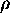
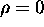
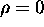

There may be occasions when the image position of candidate landmarks
cannot be considered useful for positioning. For example, rolling
terrain or other factors may make it
impossible to constrain the pose of the camera in a consistent
orientation. In these cases, one might wish to reduce  to zero.
Figure 6.5 demonstrates the accuracy of position
estimation when the image-position parameter, is set to zero,
as the camera scale parameter,  is varied. The figure
effectively plots the surface depicted in Figure 6.4 in the
limit as approaches 0. As the plot indicates,
purely appearance-based pose estimation is very effective for a wide
range of parameterisations.
is varied. The figure
effectively plots the surface depicted in Figure 6.4 in the
limit as approaches 0. As the plot indicates,
purely appearance-based pose estimation is very effective for a wide
range of parameterisations.

Figure 6.5: Appearance-based estimation error for Scene I. The plot depicts
the mean estimation error as a function of  , the camera scale
parameter when .
, the camera scale
parameter when .
For a more specific look at how well the method performs when , Figure 6.6 plots the set of twenty test cases for . The mean estimation error is 0.17cm.
Figure 6.6: Appearance-based estimation results for Scene I. The plot depicts
the set of pose estimates for the twenty test cases in Scene I with
and . The mean estimation error is 0.17cm.